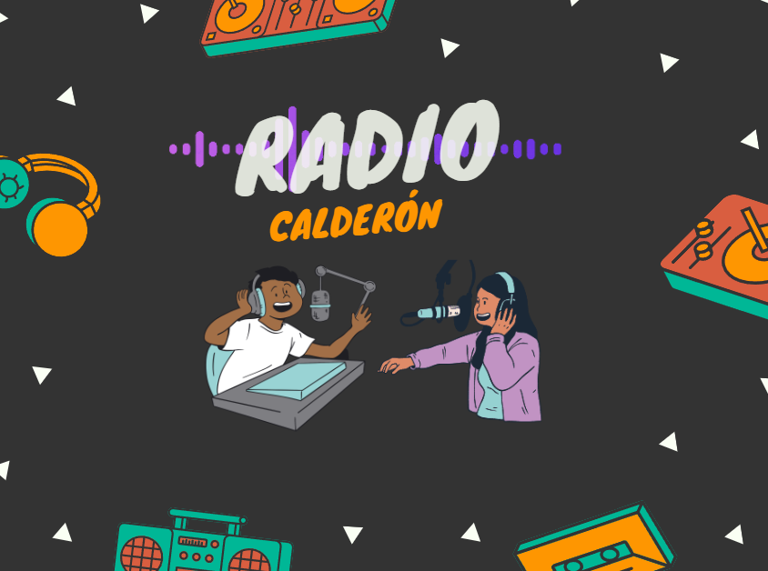

Creacion de Radio Calderon y sus integrantes
Somos un pequeño grupo de estudiantes para ser exacto 4, los cuales se nos ocurrio la idea de dar servicio de radio a nuestro instituto para darle mas variedad, e informacion a este por medio de la radio o podcast, integrando nuevas formas de gestionar e informar las noticias institucionales y de docentes pudiendo llegar tanto a estudiantes como docentes y padres, y añadiendo un apartado de temas generales y entrevistas tanto a docentes como jovenes estudiantes para que pueden escuchar las opiniones generales y eas de interes
Últimas Noticias
- BIBO Es posible una nueva economía
- asds ¿Quién es John Thune? El nuevo líder de los republicanos en el Senado de EE.UU.